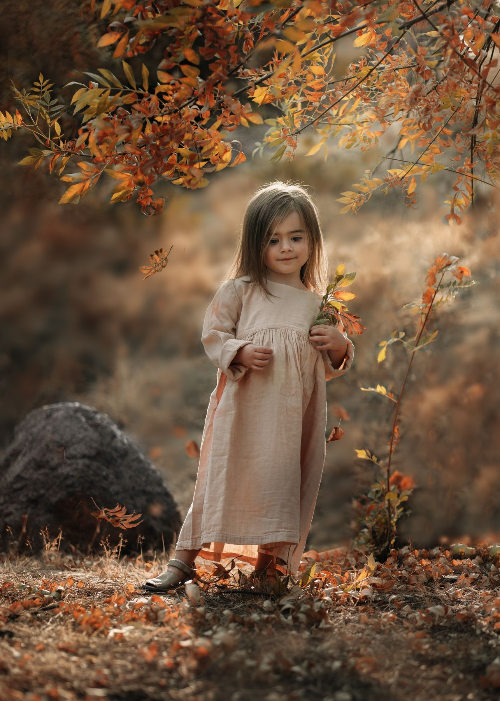

Diriges. Disparas. Aprendes a ver.
Tres horas en Central Park, con una familia y niños reales como modelos. Tú estás detrás de la cámara desde el primer minuto. Yo corrijo en tiempo real: luz, composición, dirección, pose y momento.
No vienes a observar cómo trabajo. Vienes a trabajar tú.


Llegamos a Central Park y empezamos a fotografiar. No hay diapositivas ni una hora sentada antes de tomar tu primera foto.
Trabajas con una familia y niños reales, en un entorno real, con luz natural, movimiento y todas las variables que aparecen en una sesión de verdad — no en un set controlado.

Decides dónde ubicar a la familia, cómo relacionar a los personajes y cómo construir cada imagen.
Encuentras oportunidades de luz en el entorno y reaccionas cuando las condiciones cambian.
Composición, pose, gesto, movimiento y entorno, como parte de una misma imagen.
Miramos juntos lo que capturaste y detectamos qué funciona, qué falta y qué podrías cambiar.
Corriges, cambias, pruebas de nuevo — el aprendizaje ocurre en la segunda vuelta.


Incluye el taller de 3 horas en Central Park y el material digital de la sesión. Taller en trámite de permiso oficial con Central Park Conservancy — no es un shoot improvisado.
Quiero mi lugarSesión de edición Fine Art, por Zoom. Llevamos tus fotografías de Central Park del RAW al acabado final, con el mismo criterio de edición que ves en mi trabajo.
Sumar ediciónMe dedico a la fotografía Fine Art hace 11 años, enseñando a fotógrafos y haciendo sesiones a familias.
Soy embajadora de Sony, Sony Alpha Partner, hace 5 años.
Ya son más de 1000 alumnos que me han elegido para formarse, y 1200 familias retratadas que han confiado en mí para crear sus recuerdos. ¡Me encanta enseñar!
Soy profesora en Sony Academy, en Masterclass Photographers y en mi propia escuela, y ayudo a fotógrafos en la búsqueda de su sello único, porque todo lo que enseño es lo que yo hago a diario en mis fotografías y en mi propio negocio.
He sido conferencista en 7 destacados congresos de fotografía y también he impartido workshops presenciales en Chile, Perú, Argentina, USA y México. He tenido el honor de ser jurado en 4 concursos internacionales y he sido publicada en revistas, podcasts y entrevistas de TV.
He recibido varios reconocimientos en concursos internacionales: el 2019 salí dentro de los top 35 en "35 Awards", este año me dieron 3 Bronze Awards en Portrait Masters, y me acaban de dar un premio por excelente contenido en Pinterest.


"El workshop fue un cambio total en mi carrera. Lo que aprendí me permitió elevar la calidad de mis sesiones, y mi portafolio nunca había sido tan fuerte. Hoy tengo clientes que me buscan específicamente por el estilo que aprendí en el workshop. La inversión se pagó sola en cuestión de meses"

"Asistir al workshop fue un punto de inflexión en mi carrera. Aprendí técnicas que nunca había encontrado en ningún otro curso y ahora mi portafolio es más fuerte que nunca. ¡No puedo recomendarlo lo suficiente!"

"¡Berni, muchísimas gracias por este maravilloso curso! Ha sido una experiencia entretenida y cercana, donde he aprendido muchísimo sobre el arte de la fotografía. Las sesiones fueron fantásticas, me permitieron poner en práctica lo aprendido y descubrir nuevos enfoques. ¡Todo fluyó de maravilla! Siempre estuviste dispuesta a responder nuestras dudas con amabilidad y paciencia. ¡Gracias por compartir tu pasión y conocimiento con nosotros! Feliz de participar en futuros cursos contigo!"